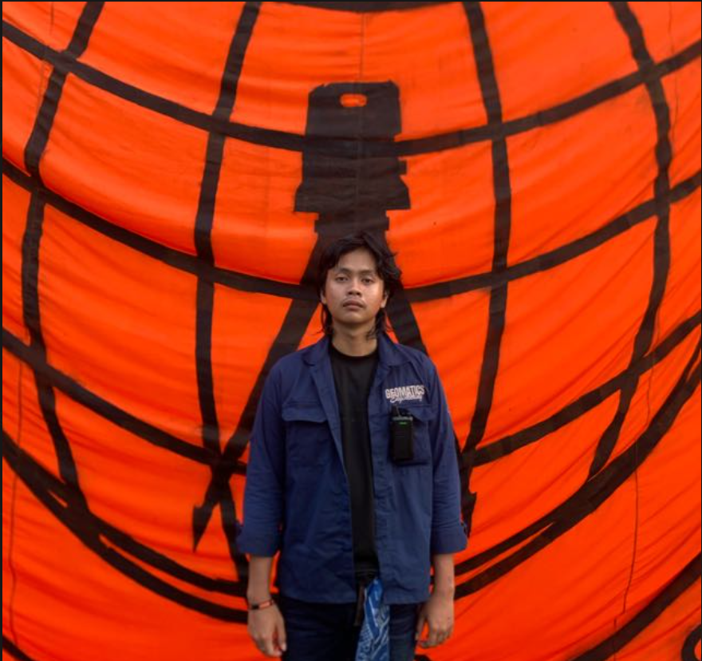

Mahasiswa program sarjana Teknik Geomatika angkatan 2024 di Institut Teknologi Sumatera (ITERA). Memiliki ketertarikan kuat terhadap pengembangan kapasitas diri, pengelolaan organisasi, analisis spasial, serta pengembangan Sistem Informasi Geografis (SIG).

Saya berorientasi untuk berperan aktif dalam mewujudkan organisasi mahasiswa yang responsif terhadap perubahan, berkembang secara progresif, dan menjunjung tinggi nilai inklusivitas. Memiliki komitmen untuk membawa Himpunan Mahasiswa Geomatika sebagai organisasi yang unggul, berdaya saing, serta mengombinasikan keahlian operasional pemetaan & Sistem Informasi Geografis (SIG) dengan pengalaman manajerial kepanitiaan secara terstruktur.
Mendapatkan pemahaman praktis dunia kerja melalui keterlibatan langsung pada kegiatan operasional. Membantu pelaksanaan tugas teknis, pengolahan data, serta mendukung aktivitas tim secara terstruktur dan profesional.
Mendukung proses pengembangan anggota melalui perencanaan dan pelaksanaan program pembinaan, penguatan karakter, serta peningkatan kapasitas organisasi.
Bertanggung jawab merancang, mengatur, dan mengawasi seluruh aspek teknis perlombaan, menyusun mekanisme lomba, serta memastikan pelaksanaan berjalan adil dan tertib.
Mengoordinasikan seluruh rangkaian kegiatan (perencanaan, pelaksanaan, evaluasi), memimpin tim, serta mengelola sumber daya agar kegiatan berjalan efektif dan sesuai tujuan.
Mengatur jalannya kegiatan di lapangan, memastikan teknis operasional berjalan sesuai rencana, serta mengendalikan situasi secara real-time.
Menjadi Penanggung Jawab cabang perlombaan Gagasan Bisnis, mengoordinasikan peserta, panitia, dan juri, serta menyusun skema jalannya perlombaan.
Bertanggung jawab mengatur jalannya kegiatan di lapangan serta menjaga kelancaran dan ketertiban operasional acara.
Penghubung antara kepanitiaan dengan pihak eksternal terkait perizinan ruangan, proposal kegiatan, hingga pengiriman surat undangan.
Pencapaian tingkat provinsi yang merefleksikan kemampuan kerja sama tim, komunikasi intensif, serta penyusunan strategi yang adaptif.
Terbuka untuk diskusi terkait proyek Sistem Informasi Geografis (SIG), analisis spasial, kerja sama organisasi, maupun peluang magang.